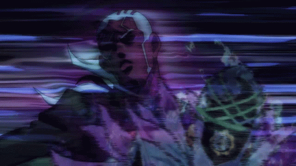
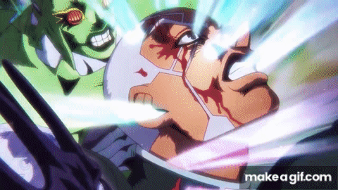
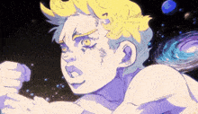

MADE IN HEAVEN
จุดสิ้นสุดของ "แผนการสู่สรวงสวรรค์" ที่ DIO บันทึกไว้ สแตนด์ที่ก้าวข้ามทุกกฎแห่งมิติและกาลเวลา ด้วยการควบคุมแรงโน้มถ่วงระดับเอกภพจนสามารถเร่งความเร็วของประวัติศาสตร์จักรวาลไปสู่จุดจบและถือกำเนิดใหม่
"君は『引力』を信じるか？... ความสุขที่แท้จริงไม่ใช่การเปลี่ยนแปลงชะตากรรม แต่คือการที่มนุษย์ทุกคนได้ล่วงรู้ชะตากรรมของตนเองและยอมรับมัน นั่นคือ 'สรวงสวรรค์' ที่แท้จริง!"

1. เส้นทางวิวัฒนาการ 3 ขั้น (The 3 Phases of Heaven) ドドドド
WHITESNAKE
ไวท์สเน็ค (สแตนด์ร่างต้น)มีความสามารถในการถอด "ดวงวิญญาณ" และ "ความทรงจำ" ออกมาเป็น DISC พุชชี่ใช้ร่างนี้แย่งชิงความทรงจำของ โจทาโร่ คูโจ เพื่อถอดรหัสบันทึกของ DIO
C-MOON
ซี-มูน (ร่างควบคุมแรงโน้มถ่วง)เกิดจากการรวมร่างกับ "เด็กทารกสีเขียว" (Green Baby) ทำให้สามารถกลับทิศทางแรงโน้มถ่วงรอบตัวในรัศมี 3 กิโลเมตร และทำให้วัตถุที่ถูกสัมผัสปลิ้นกลับด้านในออกนอก
MADE IN HEAVEN
เมด อิน เฮฟเว่น (สแตนด์สู่สรวงสวรรค์)ถือกำเนิดขึ้นเมื่อเข้าสู่พิกัดแรงดึงดูดจำเพาะ ณ ศูนย์อวกาศเคนเนดีในคืนวันพระจันทร์ดับ เร่งเวลาจักรวาลจนเข้าสู่จุดซิงกูลาริตี้เพื่อรีเซ็ตประวัติศาสตร์มนุษยชาติ

2. รูปลักษณ์และที่มาของชื่อ (Visual Concept & Music Tribute)
เซนทอร์แห่งกาลเวลา (Cosmic Centaur)
สรีระครึ่งคนครึ่งม้า โดยท่อนบนเป็นมนุษย์เทวทูตสีขาว ท่อนล่างและส่วนหน้าผสานเป็นหัวม้าศึกศึกพร้อมนาฬิกาประดับตามร่างกาย สื่อถึง "เวลา" ที่กำลังควบทะยานไปข้างหน้าอย่างไร้สิ่งใดหยุดยั้ง
คารวะวง Queen & Led Zeppelin
ตั้งชื่อตามอัลบั้มสุดท้ายของวง Queen (1995) ซึ่งในนิตยสาร Weekly Shonen Jump ตอนเปิดตัวครั้งแรก อ.ฮิโรฮิโกะ อารากิ เคยใช้ชื่อว่า "Stairway to Heaven" (บทเพลงของ Led Zeppelin) ก่อนจะเปลี่ยนเป็น Made in Heaven ในฉบับรวมเล่ม

3. กลไกพลังสัมบูรณ์ (Universal Time Acceleration Mechanics) ゴゴゴゴ
การเร่งเวลาของสิ่งไม่มีชีวิต
วัตถุ ปรากฏการณ์ธรรมชาติ เทคโนโลยี และดวงดาวจะหมุนวนด้วยความเร็วหลายล้านเท่าในพริบตา ในขณะที่เซลล์ของสิ่งมีชีวิตจะไม่ถูกเร่งตาม ส่งผลให้มนุษย์ไม่อาจตามทันโลกที่หมุนไปอย่างบ้าคลั่ง
ความเร็วระดับอนันต์ (Infinite Speed)
มีเพียงพุชชี่และสแตนด์เท่านั้นที่ก้าวข้ามและเคลื่อนไหวคู่ขนานกับเวลาที่เร่งขึ้น รวดเร็วจนการหยุดเวลา 5 วินาทีของ Star Platinum ถูกร่นเวลาจนเหลือเพียงเสี้ยววินาทีเท่านั้น
การรีเซ็ตจักรวาล (Universe Reset)
เมื่อเวลาถูกเร่งไปจนถึงจุดสิ้นสุดของเอกภพ (Singularity Point) จักรวาลเดิมจะสลายและสร้างตัวเองขึ้นมาใหม่ในรูปแบบลูปเดิม ทุกประวัติศาสตร์จะเกิดขึ้นซ้ำตามครรลองเดิมอย่างสมบูรณ์
นิยามแห่งสวรรค์ (Absolute Fate)
เมื่อข้ามสู่จักรวาลใหม่ มนุษย์ทุกคนจะล่วงรู้ชะตากรรมของตนเองล่วงหน้าตั้งแต่วันเกิดจนถึงวันตายโดยสัญชาตญาณ พุชชี่เชื่อว่าการยอมรับชะตากรรมคือความสงบสุขที่แท้จริง

4. ตารางสถิติค่าพลังสแตนด์ (Stand Parameter Wheel)
| PARAMETER | RANK | DESCRIPTIONS |
|---|---|---|
| พลังทำลาย Destructive Power | B | พลังหมัดระดับปานกลาง แต่ความเร็วที่วิ่งทะลวงทำให้เกิดพลังทำลายล้างที่เฉือนร่างเป้าหมายขาดสะบั้น |
| ความเร็ว Speed | ∞ | Infinite ไร้ขีดจำกัด พุ่งทะยานขึ้นเรื่อยๆ ตามความเร็วของเวลาที่เร่งขึ้น |
| ระยะจู่โจม Range | C | ระยะโจมตีทางกายภาพคือ C แต่ผลกระทบจากการเร่งเวลามีผลครอบคลุมทั้งเอกภพ |
| ความทนทาน Persistence | A | มีความเสถียรสูงสุด ทำงานต่อเนื่องข้ามมิติเวลาจนถึงจุดสิ้นสุดของเอกภพ |
| ความแม่นยำ Precision | C | ด้วยความเร็วที่สูงมาก การควบคุมการโจมตีจำเพาะจุดจึงทำได้ยาก เน้นการกวาดล้าง |
| การพัฒนา Development Potential | A | ศักยภาพสูงสุดในการเปลี่ยนผ่านระเบียบของจักรวาลและให้กำเนิดโลกยุคใหม่ |
5. จุดอ่อนและจุดอวสานแห่งสรวงสวรรค์ (The Fall of Pucci)
ไม่สามารถฝืนชะตากรรมที่กำหนดไว้
พุชชี่ไม่สามารถแก้ไขชะตากรรมได้ ทำได้เพียงเร่งให้มันมาถึงเร็วขึ้น หากสิ่งใดถูกกำหนดให้เกิดขึ้นต่อตัวเขา สิ่งนั้นย่อมต้องเกิดขึ้นตามกฎแห่งกรรม
สังขารมนุษย์ธรรมดา
แม้สแตนด์จะมีมิติความเร็วระดับอนันต์ แต่ร่างกายของพุชชี่ยังคงเป็นมนุษย์ที่ต้องหายใจ ยังคงบาดเจ็บ และได้รับพิษทางกายภาพได้ตามปกติ
พ่ายแพ้ด้วยพิษออกซิเจน 100% : หมากปิดเกมของ เอ็มโพริโอ (Emporio)
เอ็มโพริโอใส่แผ่นดิสก์ของสแตนด์ Weather Report ปล่อยก๊าซออกซิเจนบริสุทธิ์ 100% ในห้องกระจกปิดตาย การเร่งเวลาของ Made in Heaven กลายเป็นกับดักที่บีบให้ปอดของพุชชี่สูดออกซิเจนเข้าสู่ร่างกายอย่างรวดเร็วกว่าปกติมหาศาล จนเกิดภาวะออกซิเจนเป็นพิษเฉียบพลันและเสียชีวิตลงในที่สุด